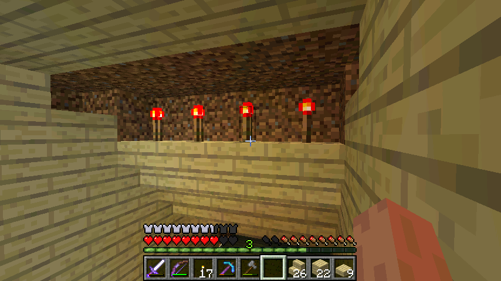

首页
上一页
108
109
110
111
112
113
113
114
115
116
117
118
下一页
末页
defanive2
无尽黑夜
14
按钮的电路稍微复杂一点，因为要保证按钮的信号不会激发活塞
7354楼
2012-10-13 13:10
defanive2
无尽黑夜
14
好吧一个简单的活塞门就这样 = =
踏板和按钮都能控制活塞门打开
7356楼
2012-10-13 13:13
defanive2
无尽黑夜
14
接下来需要造一堆的火把
嗯，火把嘛，照明用
7359楼
2012-10-13 13:16
defanive2
无尽黑夜
14
然后这样放火把
7360楼
2012-10-13 13:21
defanive2
无尽黑夜
14
没错这个就是1.3的照明BUG
由于阶梯是半透明方块，所以亮度可以进入到阶梯的内部（但是在外部不会渲染出来）
而渲染阶梯的那步阶的时候，那2个面是在阶梯内部的
因此就被火把照亮了
营造一种很神秘的气氛
7362楼
2012-10-13 13:24
defanive2
无尽黑夜
14
没错，去除全部光源之后是灰常的漂亮
不过要注意防止刷怪，因此整个建筑都是要以半砖为基础
7365楼
2012-10-13 13:33
defanive2
无尽黑夜
14
天花板使用倒置的半砖也可以进行透光，不过效果比较暗
7367楼
2012-10-13 13:41
defanive2
无尽黑夜
14
不过对于天花板的半砖，我更喜欢用台阶
这样看起来会有天花板灯的效果，但是又不会实际照亮方块
地板墙角的各种亮光也是通过半砖做的
7370楼
2012-10-13 13:48
defanive2
无尽黑夜
14

用红石火把做光源可以降低天花板的亮度，突出地板的亮度
7372楼
2012-10-13 14:15
defanive2
无尽黑夜
14
墙上也可以同理做这种照明灯
7377楼
2012-10-13 14:31
defanive2
无尽黑夜
14
目前的工作进度
7380楼
2012-10-13 14:39
defanive2
无尽黑夜
14
好吧今天就做到这里，手都疼了 = =
7381楼
2012-10-13 14:53
defanive2
无尽黑夜
14
好吧暂时就做到这里了，下次再继续做
PS 门是不是应该用暗一点的木头？感觉白桦木做活塞门有点亮了
7382楼
2012-10-13 15:00
defanive2
无尽黑夜
14
最简单的发射站的做法。。。
站在围栏上，然后拉动拉杆就可以了
8个TNT，发射大约90m高度
7384楼
2012-10-13 15:19
defanive2
无尽黑夜
14
关于发射站
这里演示一下基本的工作原理
TNT爆炸时如果是在液体中（水或者岩浆），那么不会产生破坏，但是仍然会产生冲击波
发射原理很简单，把TNT点燃，然后让冲击波把玩家向上推就可以了
给大家看一下工作原理，具体的明天再解释
PS 这里演示的是没有辅助装药系统，如果不怕麻烦手动装药的话，发射站的电路是很简单的
冰在这里表示水源，人站在楼梯上
此时是未激发的状态
7385楼
2012-10-13 15:27
defanive2
无尽黑夜
14
TNT被点燃，变成了entity，下落叠在一起
7386楼
2012-10-13 15:28
defanive2
无尽黑夜
14
活塞收缩，被点燃的TNT继续下落
7387楼
2012-10-13 15:29
defanive2
无尽黑夜
14
活塞伸出，把点燃的TNT推倒了水的位置
爆炸产生冲击波，把站在楼梯上的玩家炸飞
7388楼
2012-10-13 15:30
defanive2
无尽黑夜
14
大致工作原理就是这样，电路也很简单
但是如果要把辅助装药系统给做上的话电路就复杂了
大概就是这样 = =
睡觉去
7389楼
2012-10-13 15:32
defanive2
无尽黑夜
14
PS一下
我的这种发射站对TNT的利用率非常高
上面演示的那种最简易的发射站8个TNT射程90m
而我的发射站8个TNT射程118m
理论上不断增加TNT个数就可以到达非常高的高度
PS 创造模式做了一个蛋疼的，一次花费大概150个TNT左右，将玩家发射到3000+m的高空
发射到落地的过程有1分多钟 = = 风景非常美
7390楼
2012-10-13 15:39
defanive2
无尽黑夜
14
早上去围观了博物馆
现在来继续打MC吧
想把地下宫殿给做好，不过感觉工程量比较大
7397楼
2012-10-14 06:07
defanive2
无尽黑夜
14
把活塞门换成了雨林木板，看起来好看多了
蔓藤也长完了
7398楼
2012-10-14 06:14
defanive2
无尽黑夜
14
我了个去无语了，结果链接到了我的地铁
看起来要搬迁地铁了
7399楼
2012-10-14 06:16
defanive2
无尽黑夜
14
蛋疼 = =
看起来整个铁路都要大搬迁了
7400楼
2012-10-14 06:25
defanive2
无尽黑夜
14
最后的宫殿准备做成24x22大的，应该很不错
7401楼
2012-10-14 06:31
defanive2
无尽黑夜
14
我了个去这是在坑爹吗
7402楼
2012-10-14 06:35
defanive2
无尽黑夜
14
遇到了河流 = =
不过还好伸出的不多，清理一下就好了
7404楼
2012-10-14 06:38
defanive2
无尽黑夜
14
挖掘ing，完成了一半
PS 这是第一层
7405楼
2012-10-14 07:04
defanive2
无尽黑夜
14
钻石稿快坏了，留下来换新稿
为1.4做准备，1.4有了anvil可以进行修复
7406楼
2012-10-14 07:10
defanive2
无尽黑夜
14
换效率4的稿子
7407楼
2012-10-14 07:11
首页
上一页
108
109
110
111
112
113
113
114
115
116
117
118
下一页
末页